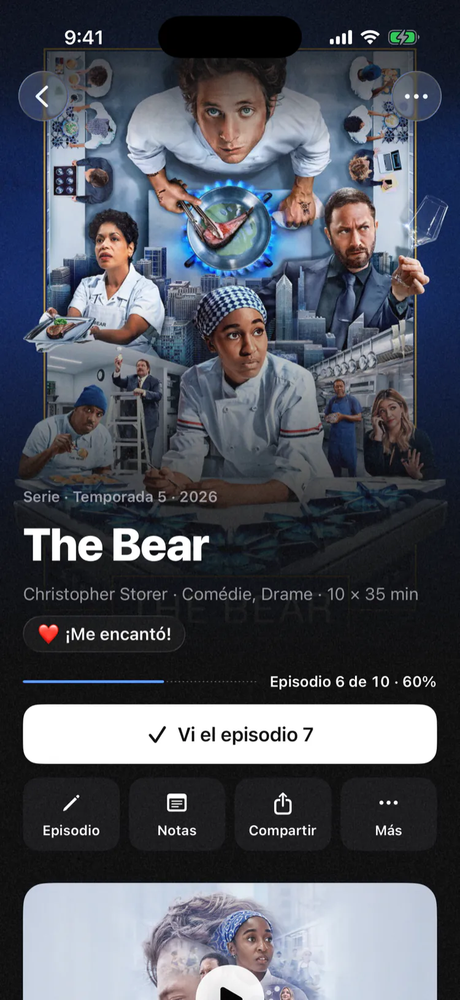
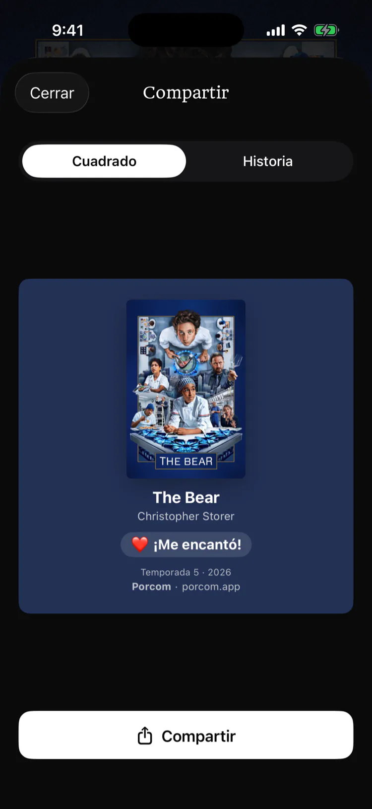

Tu lista de películas y series por ver, en tu iPhone
Última actualización: 21 de noviembre de 2026
Guarda todas las películas y series que quieres ver en un solo lugar, mira dónde están disponibles y deja que Porcom elija la de esta noche. Gratis, sin cuenta y sin anuncios.

Por ver, y vistos en un tráiler
Agrega un título a tu lista To watch con un toque. ¿Viste el tráiler de algo que todavía no se estrena? Ponlo en Spotted y te espera ahí hasta su estreno.
Dónde verlo en Canadá
La página de cada título se abre con su tráiler y muestra los servicios de suscripción donde está disponible en Canadá, según los datos de JustWatch que proporciona TMDB.

¿Qué veo ahora?
¿No te decides? Gira la ruleta y deja que el azar elija entre tus títulos por ver, o entre las recomendaciones de TMDB.
Comparte tu lista
Envía tu lista por ver como texto o como imagen, para una noche de cine con amigos.

Gratis y privado
Porcom funciona sin cuenta. Tu diario se queda en tu iPhone y en tu iCloud privado, al que no tenemos acceso. La app está en inglés y francés.
Descarga Porcom en el App Store: gratis, sin cuenta, sin anuncios y sin suscripción.
Preguntas
Consulta las preguntas frecuentes o visita el soporte.